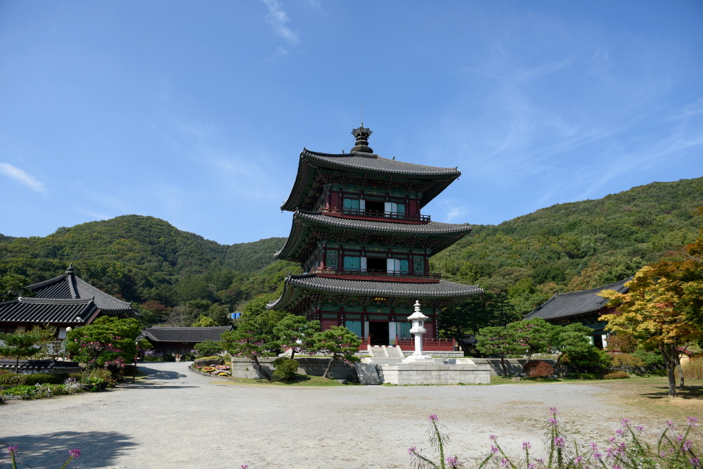
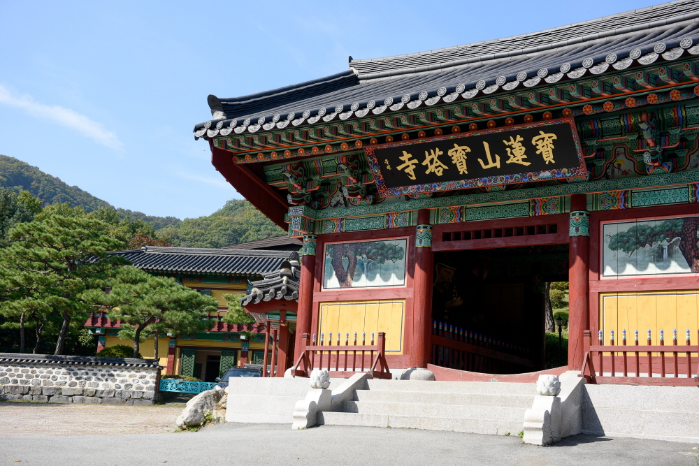
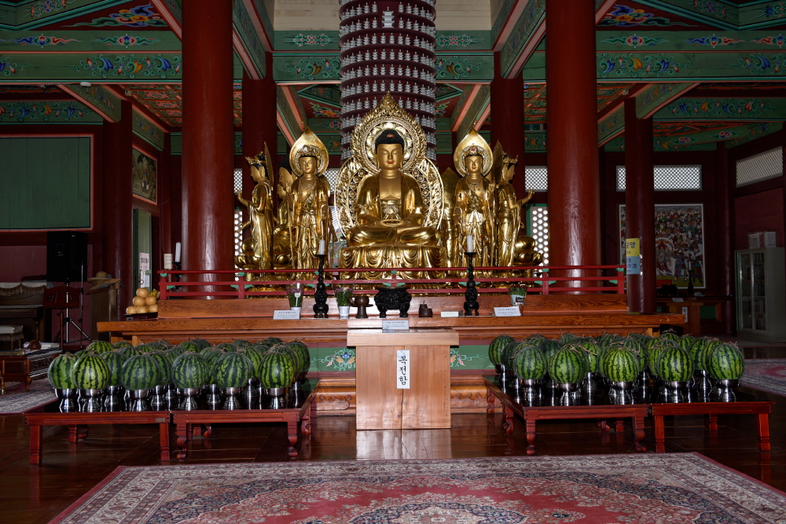
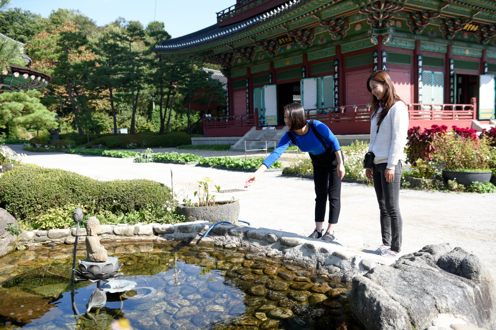

소개
충청북도 진천군 보련산 자락에 있는 사찰로, 1996년 고려시대 절터로 전해지는 곳에 비구니스님인 지광·묘순·능현스님이 창건하였다.
1992년 대목수 신영훈을 비롯한 여러 부문의 장인들이 참여한 불사를 시작하여 1996년 8월 3층목탑을 완공하였고, 그 후 지장전·영산전·산신각 등을 건립하고 2003년 불사를 마쳤다.
황룡사 9층목탑을 모델로 만든 3층목탑의 높이는 42.71m로, 상륜부(9.99m)까지 더하면 총 높이가 무려 52.7m에 이르는데 이는 14층 아파트와 맞먹는 높이이다. 목탑을 떠받치고 있는 기둥은 모두 29개이다. 강원도산 소나무를 자재로 하여 단 한 개의 못도 사용하지 않고 전통방식을 고수하여 지어졌다 한다.
1층은 대웅전(199㎡), 2층은 법보전(166㎡), 3층은 미륵전(136㎡)으로 이루어져 있다. 대웅전에는 사방불(동방 약사우리광불, 서방 아미타여래불, 남방 석가모니불, 북방 비로자나불)이 배치되어 있으며, 법보전에는 윤장대(輪藏臺; 경전을 넣은 책장에 축을 달아 회전하도록 만든 책장)를 두고 팔만대장경 번역본을 안치했고, 한글법화경을 총 9t의 돌판에 새겨 놓았다. 미륵전에는 화려한 금동 보개 아래에 미륵삼존불을 모셨다. 2층과 3층 외부에는 탑돌이를 할 수 있도록 난간이 설치되어 있다.
보탑사에는 그밖에 장수왕릉(장수총)을 재현해 만든 지장전, 너와지붕을 얹은 귀틀집 형식의 산신각, 부처가 500명의 비구들에게 설법하던 모습을 재현해 만든 영산전, 와불 열반적정상을 모신 적조전, 법종각·법고전·불유각·삼소실 등의 건축물이 조성되어 있다. 경내에는 보물 제404호로 지정된 고려시대의 석비인‘진천 연곡리 석비’도 있다.
황룡사 9층목탑을 모델로 만든 3층목탑의 높이는 42.71m로, 상륜부(9.99m)까지 더하면 총 높이가 무려 52.7m에 이르는데 이는 14층 아파트와 맞먹는 높이이다. 목탑을 떠받치고 있는 기둥은 모두 29개이다. 강원도산 소나무를 자재로 하여 단 한 개의 못도 사용하지 않고 전통방식을 고수하여 지어졌다 한다.
1층은 대웅전(199㎡), 2층은 법보전(166㎡), 3층은 미륵전(136㎡)으로 이루어져 있다. 대웅전에는 사방불(동방 약사우리광불, 서방 아미타여래불, 남방 석가모니불, 북방 비로자나불)이 배치되어 있으며, 법보전에는 윤장대(輪藏臺; 경전을 넣은 책장에 축을 달아 회전하도록 만든 책장)를 두고 팔만대장경 번역본을 안치했고, 한글법화경을 총 9t의 돌판에 새겨 놓았다. 미륵전에는 화려한 금동 보개 아래에 미륵삼존불을 모셨다. 2층과 3층 외부에는 탑돌이를 할 수 있도록 난간이 설치되어 있다.
보탑사에는 그밖에 장수왕릉(장수총)을 재현해 만든 지장전, 너와지붕을 얹은 귀틀집 형식의 산신각, 부처가 500명의 비구들에게 설법하던 모습을 재현해 만든 영산전, 와불 열반적정상을 모신 적조전, 법종각·법고전·불유각·삼소실 등의 건축물이 조성되어 있다. 경내에는 보물 제404호로 지정된 고려시대의 석비인‘진천 연곡리 석비’도 있다.
찾아오는 길
갤러리



×

×

×

×